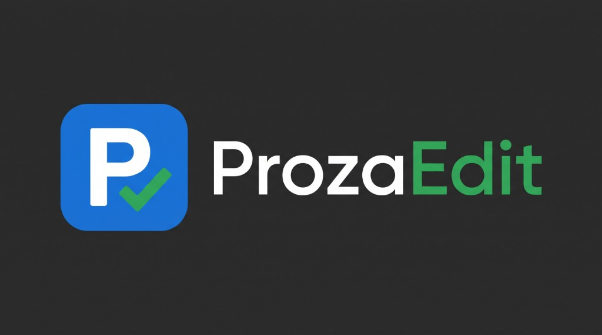

Local-first: audit, coach, paraphrase = 0 API tokens. Partner tools in Word:
Backups: Version History. Editorial checks are original JS — THIRD-PARTY-ATTRIBUTION.md.
Scope: highlighted selection — refresh count on Target for character estimate.
Dictionary: this Word document · Mute: this document + this browser · Dismiss wording: this browser only (not other PCs or files).
Start here: pick scope below, then open Run (Checks) to audit. Profile and style guide are under advanced sections. Toolbar Settings holds dictionary, safety, and custom rules.
Scope first — profile & style below or in Settings
Modes: highlighted selection; approximate page range (choose Page range, then set From page / To page — about 2,800 characters per page); selected chapters (checklist when that mode is active); or full manuscript.
Select a scope, then click Refresh count.
Full MS context not built
Background chunked read for story arc and continuity — stored locally in this document (—). Chapter-scoped audits use it when fresh.
Pick the closest fit — checks, thresholds and AI prompts adjust to it. Saved with this document.
Plot, character, and spoiler checks run only for Fiction types with those modules enabled; Academic and Business audits skip them.
Adds those terms to the allowed-words list for this document and relaxes passive-voice limits where that genre needs it.
Built-in guides use local heuristics only. Sources: STYLE-GUIDE-SOURCES.md · THIRD-PARTY-ATTRIBUTION.md.
View: Advanced (Simple / Advanced) —
Target fields auto-save when you change them. Advanced options in Settings.
Online lookup: only the search word is sent to Datamuse when you click Search. Run audit does not use Datamuse.
Scope: —
Walkthrough: PHASE-1-QUICKSTART.md
Full MS context not built
A heuristic local outline (not AI): chapter list, word counts, first/last lines, recurring names, time cues. Stored in this document only; included in an AI request only if you use an AI action. If it goes stale it is still used but flagged, and you will see a refresh notice.
ProzaEdit checks when you click Run — it does not underline while you type.
Turn on checks below, then Run audit.
Experimental pattern check only — it cannot tell who or what wrote a text, and is not proof of AI use or plagiarism.
Plot, timeline, and fiction modules run only when type is Fiction. Citation verify runs for Academic, Business, and Technical/Journalism when you opt in below — other types skip fiction and citation engines automatically.
See Quick start & editing stack above or WORKFLOWS.md.
Chapter heatmap needs Heading 1–3 styles on chapter titles.
Disabled fiction toggles are not run by the audit engine (not just greyed out).
Heuristic APA / CMOS / Bluebook-lite patterns on current Target scope — pattern assist only, not certification. Opt-in below; does not replace the academic citation hint during Run audit.
Heuristic temporal anchors on the current Target scope — not a continuity bible. Run audit separately; this scan is explicit.
Scope (read-only): —
Report depth: Balanced (change in Settings)
Default filter: All (change in Settings)
Filter lanes: Pick one chip (Critical, Style, Style guide) to work one category at a time — not a full “run every report” pass.
Cloud action: the prompt and chosen context are sent to the AI provider you picked in Settings only when you click Send via AI. Context is selection-only by default; turning that off can send a document excerpt. If you built a manuscript index, that heuristic outline (chapter titles, first/last lines, recurring names) is included in the request too. Local Coach and Run audit never use AI. Gemini free-tier prompts may be used by Google to improve its products (paid keys are not). If a request fails with a plain network error, check the key first — OpenAI hides key errors from browsers.
AI help is off until you add an AI provider API key.
ProzaEdit — local-first manuscript audit, coach, and rewrite for Word (hosted beta).
Accuracy: checks are tuned against a labeled test set (precision target 85% or better for what Simple view shows). Tense and viewpoint shifts are hints that ignore dialogue and flashbacks and appear in Simple view only when clearly accidental. Content notes (Settings → Safety, off by default) neutrally report strong language and violence; they never change your text or your score.
2.0.0.21 (PROZAEDIT_BUILD_VERSION)2.0.0.21 (manifest.hosted.xml)d1829e3a-4931-4122-b911-37f22941aa99Check for updates compares this pane to the live manifest on GitHub (see below).
Short walkthrough on GitHub (install, Target → Checks → Audit, Simple mode, updates):
Start here
Manual audits (not realtime): ProzaEdit runs manual audits when you click Run audit — not Grammarly-style realtime underlines in Word.
Daily use: Home → ProzaEdit. No bat files or local server.
Analysis scope (Target): Highlighted selection; Page range (From/To pages, ~2,800 chars each); Selected chapters (Heading 1–3 checklist); or Full manuscript.
Run audit: Target → set scope → Checks → turn modules on → Run audit → Fix cards. Chapter audit uses full-manuscript context when you have built the context index and the document has not changed much (paragraph count).
Full manuscript context: Checks or Target → Build full manuscript context runs a cooperative background read (cancel anytime). It is a local, heuristic outline (not an AI summary), stored in this document’s own settings key, and it is sent to your chosen AI provider only as part of an AI request you click — flagged if it may be out of date.
Settings (toolbar gear): Simple mode, safety toggles (confirm before apply, hover tips, FK lock, continuity slider), audit defaults (report depth, default filter, extended checks), privacy & diagnostics, per-document dictionary, capture reference style, citation scan shortcut, AI provider, model and token limits (AI help section), and custom style rules (add/edit/bulk import). Target keeps manuscript profile, analysis scope, and preferred style guide.
Keyboard shortcuts: Open Settings — Ctrl+Shift+, or Alt+Shift+S (when focus is not in a text field). Undo / Redo — toolbar buttons (Word undo still applies to all edits). See checklist §8 for banner and control sync tests.
Look & navigation: Light (indigo primary) or Dark / Match system (Settings → Appearance). In dark mode, light green marks primary actions, the active tab, and workflow step — not finding severity. The sticky line under the toolbar shows your active style guide, scope, and character estimate after Refresh count. ProzaEdit remembers your last tab per document. Deep links: Help → Privacy, Target → Custom rules, or bookmark #pe-settings-privacy. Settings and Rewrite (from an audit card) offer Back when you need to return without hunting tabs.
Color legend: Critical · Style · OK / primary action (card left border and badges = severity; green/indigo buttons = actions).
Hover tips: Settings → Show hover tips toggles ProzaEdit guidance bubbles (off restores normal browser titles).
Apply fix: Uses first match in the document (not selection-only). Turn off “Confirm before Apply” in Settings for speed.
Rewrite (audit card): Selects the finding in Word, opens Rewrite, clears stale preview — run Local paraphrase and apply manually (0 tokens).
Go to last edit: Sticky toolbar pin jumps to the text you last replaced (audit apply, thesaurus, or rewrite).
Thesaurus: Pick a synonym → replaces the looked-up word in scope (respects selection-only on Target unless audit-style apply).
Rewrite: Local paraphrase preview → Apply preview to selection writes into Word; use Undo or Last edit if you need to find the change.
Audit → Rewrite: Card Rewrite selects the finding and opens the Rewrite tab (preview only until you apply).
Mute / Dismiss / Dictionary: Dictionary terms are saved in this Word document (Office document settings, not just this browser tab). Mute saves the rule in this document and in this browser (same PC profile — not other computers or Word accounts). Dismiss silences that exact wording in this browser only. ProzaEdit does not sync ignores across documents or devices yet. Use Dict on a card for one-click dictionary adds.
.docx.Long documents: Prefer Selected chapters or Page range on Target. The status bar shows read progress (~paragraphs). Cancel stops after the current Word batch; use Run audit again without reloading. If you cancel mid-read, the pane remembers the last paragraph progress for this browser tab only (see status hint on the next run).
Full manuscript: Target → Full Manuscript, or use Section + audit on Checks for long docs.
More: WORKFLOWS.md (editing stack) · THIRD-PARTY-ATTRIBUTION.md
Download and upload once in Word:
Word on the web: Add-ins → More Add-ins → My Add-ins → Manage My Add-ins → Upload (dropdown) → Upload My Add-in.
Upload often works only on a new blank document first; then open your real manuscript. Desktop app may not show Upload — use the browser.
Push files to GitHub (src/assets). Hosted manifest loads the latest UI on next open (may take 1–2 minutes). Bump manifest version if Word caches hard.
Live dev: use archived _archive/local-dev on your PC with Start ProzaEdit.bat — not for normal writing.
Use About ProzaEdit → Check for updates above, or the same control here after install steps.
Install file: only manifest.hosted.xml is uploaded to Word once. The app loads from GitHub Pages after that.
Download manifest.hosted.xml (OneDrive/iCloud/Downloads all work — open from that folder when Word asks).
Optional anonymous crash reports and manual problem reports live in toolbar Settings → Privacy & diagnostics (Off by default). Full details: DIAGNOSTICS.md
Works: Word on the web in supported browsers (Windows, macOS, iPad, Android) when signed in with Microsoft.
Task pane width: Word controls column width — drag the divider between document and pane. ProzaEdit fills 100% of the host; daily profile and scope are on Target; toolbar Settings holds advanced toggles. Details: WORD-WEB-PANE-WIDTH.md.
Limited: Word desktop often has no Upload; iPad/Android need the browser app, not only the mobile Word app if Upload is missing.
Rule-based tightening (Strunk-style wordiness lists, contractions, pleonasms). Original ProzaEdit code — not QuillBot or any third-party paraphrase API.
Optional calibration on top of the paraphrase mode above. Open this panel to apply; collapsed = mode only (Phase 3 — local pipelines, not full Zipf).
Cloud action: the selected text and rewrite instructions are sent to the AI provider you picked only when clicked. A built manuscript index (heuristic outline, not an AI summary) is included in that request.
AI help is off until you add an AI provider API key.